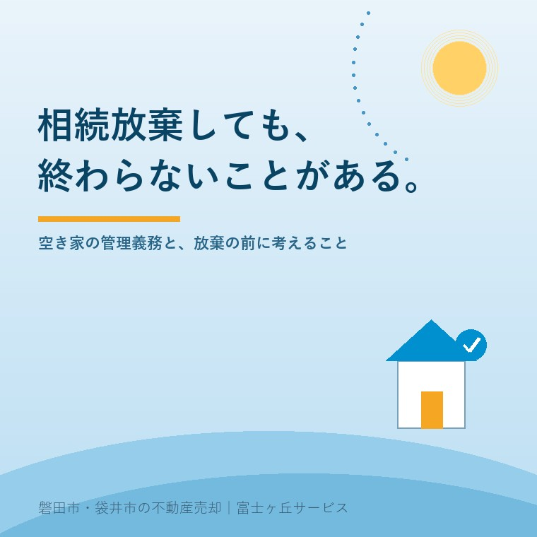

2026年7月21日｜カテゴリ：相続放棄・空き家

この記事の要点
Q. いらない実家、相続放棄すればもう関係なくなる？
A. 相続放棄をしても、その家に住んでいるなど「現に占有」している場合は、次に管理する人へ引き渡すまで保存義務が残ります。しかも放棄は預金などほかの財産もまとめて手放す手続きで、実家だけを選んで放棄することはできません。磐田市・袋井市では、放棄を決める前に、介護施設の運営から不動産事業を始めた富士ヶ丘サービスのような「介護×不動産」専門の会社に「本当に売れないのか」を相談するという選択肢があります。
「古い実家なんて誰もいらないから、相続放棄しようと思うんです」。実家じまいのご相談で、ときどき出てくる言葉です。たしかに相続放棄は有効な手段のひとつですが、「放棄すれば実家と完全に縁が切れて、あとは何もしなくていい」という理解のまま進めると、思わぬ落とし穴があります。2023年の民法改正でルールが明確になった「保存義務」の話を中心に、放棄の前に知っておきたいことを整理します。
相続放棄は、家庭裁判所に申述して、はじめから相続人でなかったことにする手続きです。期限は、自分のために相続が開始したことを知った時から原則3か月以内。この「熟慮期間」を過ぎると、原則として放棄はできなくなります（事情があれば期間の伸長を家庭裁判所に申し立てる方法もあります）。
ここで大事なのは、放棄は財産を選べないということです。「ボロボロの実家はいらないけれど、預金は受け取りたい」はできません。実家を手放すために放棄をすると、預金も株も、思い出の品につく権利も、すべて手放すことになります。実家の価値と他の財産のバランスを見ずに放棄を決めるのは、順番が逆なのです。
もうひとつの落とし穴が、放棄後の空き家の扱いです。2023年4月に施行された改正民法940条で、ルールがはっきりしました。
| 状況 | 放棄後の義務 |
|---|---|
| 実家に同居していた・実質的に管理していた（現に占有） | 次に管理する人（他の相続人や相続財産清算人）に引き渡すまで、自分の財産と同じ注意をもって保存する義務が残る |
| 遠方に住んでいて実家を占有していない | 保存義務は負わないことが明確化された |
つまり、親と同居していた人が放棄した場合、放棄が受理されても「はい終わり」ではなく、家を荒れるに任せてよいわけではありません。屋根が飛んで隣家を傷つけるようなことがあれば、責任を問われるおそれもあります。
さらに、あなたが放棄すると相続権は次の順位へ移ります。子ども全員が放棄すれば親の兄弟姉妹（おじ・おば）へ、というように、「いらない実家」が親族の間を回っていくのです。全員が放棄した場合、最終的に家庭裁判所へ相続財産清算人の選任を申し立てる方法がありますが、申立てには費用がかかり、清算が終わるまで「現に占有」する人の保存義務は続きます。放棄は、家族・親族全体で見ると「問題の解決」ではなく「問題の移動」になってしまうことがあるのです。
3か月という期限は、調べ始めると意外に短いものです。だからこそ、亡くなった直後の慌ただしい時期に、実家の価値と支障（名義・道路・農地・残置物）をすばやく棚卸しすることが、放棄すべきかどうかの判断材料になります。
当社は磐田市・袋井市に密着して実家じまい・相続のご相談を受けていますが、「相続放棄しかない」と思い込んでいらしたご家族が、調べてみると市街化区域内で普通に売却できる家だった、というケースは実際にあります。逆に、農地や山林が混ざっていて放棄も含めた比較検討が必要なケースもあります。どちらにしても、判断の土台になるのは「この実家はいま、どういう状態なのか」という事実の整理です。
当社の「ふじがおか実家カルテ」は、名義・道路・境界・農地・残置物といった売却時の支障を宅建士が机上調査で1冊にまとめるサービスです。放棄の期限である3か月の中でも間に合う速さで、「売れる家か、手放し方を工夫する家か」の見立てをお渡しできます。磐田市の空き家相談会などの公的窓口とあわせてご活用ください。
富士ヶ丘サービスは、介護と不動産を一体でご相談いただける会社として、「高く売る」だけでなく「家族があとで困らない選択」を大切にしています。放棄という重い決断の前に、まず実家の現状を一緒に整理しませんか。
ふじがおか実家カルテ｜固定資産税通知書だけでも相談可
放棄を決める前に、「売れる家か」を確かめる。
名義・道路・境界・農地・残置物を宅建士が机上で確認します。相続の全体像の整理は相続はじめ相談室もご利用ください。
本記事は2026年7月21日時点の情報をもとに作成しています。相続放棄の可否・期限・保存義務の個別判断は、弁護士・司法書士・家庭裁判所へご確認ください。
磐田市・袋井市の実家じまい・相続空き家相談
固定資産税通知書だけでも相談できます
住所があいまいでも、通知書や写真から名義・道路・農地・残置物の確認順を整理します。カルテ申込またはLINEで状況を送ってください。
富士ヶ丘サービス株式会社／静岡県磐田市見付5789番地1／TEL:0538-31-3308／静岡県知事 (2) 第14083号／代表取締役・宅地建物取引士 大石 浩之